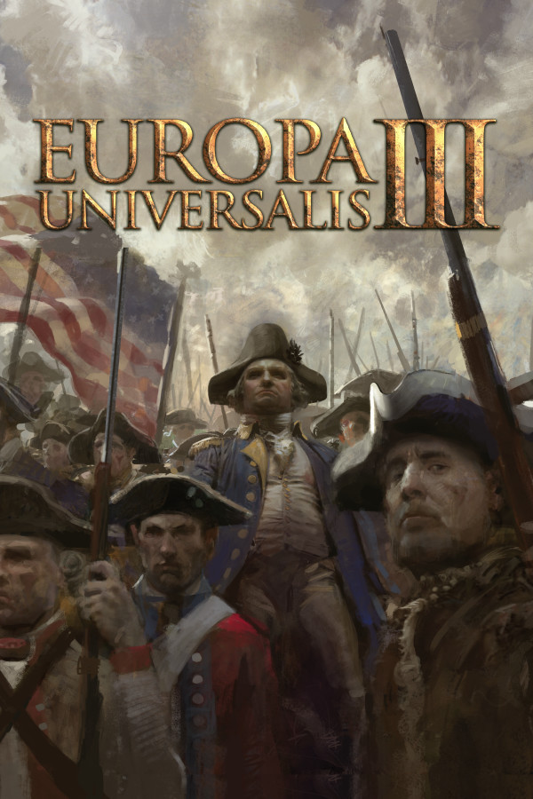

Europa Universalis III Demo
Europa Universalis III Demo
Details
|  | |
| Playtime | Not Played |
| Last Activity | Never |
| Added | 15/03/2025 15:45:35 |
| Modified | 18/05/2025 1:27:56 |
| Completion Status | Not Played |
| Library | Steam |
| Source | Steam |
| Platform | PC (Windows) |
| Release Date | 15/02/2009 |
| Community Score | 67 |
| Critic Score | 83 |
| User Score | |
| Genre | Strategy |
| Developer | Paradox Interactive |
| Publisher | |
| Feature | Game Demo Multiplayer Single Player |
| Links | Community Hub Discussions Guides News Store Page PCGamingWiki |
| Tag | 4X Addictive Alternate History Co-op Grand Strategy Great Soundtrack Historical Logic Medieval Moddable Multiplayer Political Political Sim Real-Time with Pause RTS Sandbox Simulation Singleplayer Strategy War |
Description
Europa Universalis III Complete includes the original Europa Universalis III as well as the expansions In Nomine and Napoleons Ambition
Europa Universalis III delves deeply into the areas of exploration, trade, warfare and diplomacy. This epic strategy game lets players take control of a nation and guide it through the ages to become a great global empire. Unparalleled in its depth and historical accuracy, Europa Universalis III gives the player unprecedented freedom in how they choose to rule their nation from an impressive choice of over 250 historically accurate countries.
In Nomine includes the following features:
Features included in Napoleon's Ambition:
Europa Universalis III delves deeply into the areas of exploration, trade, warfare and diplomacy. This epic strategy game lets players take control of a nation and guide it through the ages to become a great global empire. Unparalleled in its depth and historical accuracy, Europa Universalis III gives the player unprecedented freedom in how they choose to rule their nation from an impressive choice of over 250 historically accurate countries.
- Players can enjoy over 300 years of game play by starting at ANY date between 1453 and 1820.
- Nation building is flexible: decide your own form of government, the structure of your society, trade politics and much more. The possibilities are endless.
- The great people and personalities of the past are on hand to support you. Take history in your hands and call personalities like Sir Isaac Newton, Wolfgang Amadeus Mozart or René Descartes to your court.
- A lush topographic map in full 3D allows for a rich and complete world view, and contains more than 1700 provinces and sea zones.
- Lead any one of more than 250 countries that originally existed during the game's extensive time span.
- Have more than a thousand historical leaders and over 4000 historical Monarchs at your disposal.
- Manage more than 100 individual unit troops to secure as much power as possible.
- Co-operative multiplayer mode allows several players to work together to control a single nation.
- Customize your game: Europa Universalis III gives you the chance to customizeand mod practically anything your heart may desire. Join the constantly growing and incredibly talented Paradox modding community!
In Nomine includes the following features:
- New Missions Countries will now have specific missions tied to actual historical events which players may complete for bonuses. Players are not required to complete these missions; however, these features will give players who want defined goals a more structured path.
- New Decision System World leaders will now have a better overview of the decisions needed to shape the future of their country. They will also have expanded control over the future of their countries on both the provincial and national level.
- Rebels with a Cause Rebels with specific goals and abilities will rise to challenge players every step of the way. These 'rebels with a cause' will all have their own unique grievances and can be negotiated with or completely eradicated, at the player's discretion.
- Religious Tolerance Religious tolerance now depends on the ideas and decisions taken by world leaders, adding a new layer of strategy. Political and religious dissidents can be handled in a number of effective ways, from excommunicating wayward rulers to organizing crusades.
Features included in Napoleon's Ambition:
- Expanded Timeline The expanded timeline includes new content such as new leaders, rulers, advisor wars, countries and national ideas as well as dozens of new units for more tactical choices.
- Historical Options With hundreds of new events, players will be able to see their rulers, leaders and advisors appear on accurate historical dates.
- Improved Interface The new trading mode for the map displays all goods that will be produced in each respective province, including the value of the goods. This means the ledger will have more pages, including information about colonies and leaders.
- Enhanced Trading System The new trading system will let players to automatically send merchants to specific trading centers. Players can choose the trading centers they most want to focus on, and the game will automatically take care of the necessary trading actions. This system also includes a new rule for overseas trade where players will have to use war or diplomacy to give merchants access markets.